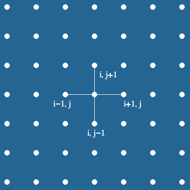
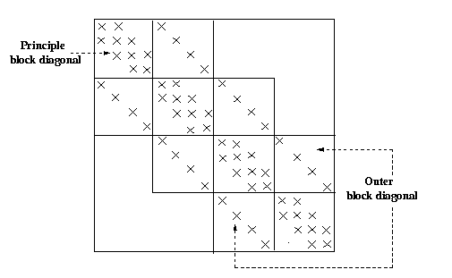
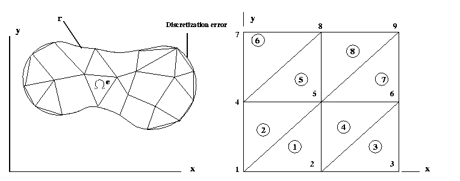
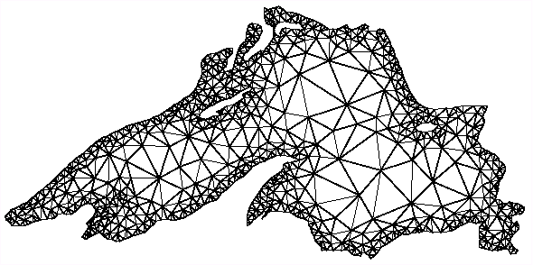
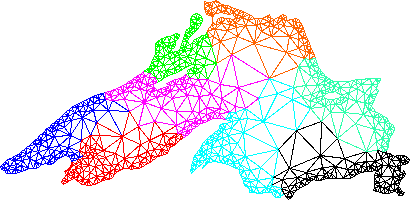

hyPACK-2013 Mode 1 : Programming Using MPI 1.X Implementing Solution for Partial
differential Equations - Finite difference & Finite Element Method
computation algorithms
Module 8 : MPI programs on Dense Matrix Computations -
Parallel Programs for implementation of solution of Partial differential
Equations using finite Difference/Finite Element Method
and execute on Message Passing Cluster or Multi Core Systems that support
MPI library. |
|
|
Example 8.1
|
Parallel Program for implementation of Soluiton of Poission Equation (PDE) by Finite Difference Method (One dimensional
Decomposition ).
|
Example 8.2
|
Parallel Program for implementation of Soluiton of Poission Equation (PDE) by Finite Difference Method (Two dimensional
decomposition).
|
Example 8.3
|
Parallel Program for implementation of Soluiton of Poission Equation (PDE) by Finite Element Method (Two dimensional
decomposition).
|
| |
|
(Source - References :
Books
Multi-threading
-
[MC-MPI-02], [MCMPI-06], [MCMPI-07], [MCMPI-09], [MC-MPI10], [MCMPI-11],
[MCMTh-12],[MCBW-44], [MCOMP-01])
|
|
Description of Programs - for solution of PDE's using MPI Library Calls |
Example 8.1:
|
Write MPI program to implement Soluiton of Poission Equation (Partal differential Equations) by
Finite Difference Method using One DimensionalDecomposition of Mesh
( Download WinRAR ZIP archive:
Poisson (Two Dim) (WinRAR ZIP archive)
|
Objective :
Write a MPI program to solve the Poisson equation with Dirichlet
boundary conditions in two space dimensions by finite difference method
on structured rectangular type of grid. Use Jacobi
iteration method to solve the discretized equations.
Description:
In the Poisson problem, the FD method is imposed a regular
grid on the physical domain. It then approximate the derivative of unknown
quantity u at a grid point by the ratio of the difference in u
at two adjacent grid points to the distance between the grid point.
In a simple situation, consider a square domain discretized by n
x n grid points, as shown in the Figure 8.1(a). Assume that the
grid points are numbered in a row-major order fashion from left to right
and from top to bottom, as shown in the Figure 8.1(b). This ordering is
called natural ordering . Given a total of n2
points in the domain n x n grid, this numbering scheme
labels the immediate neighbors of point i on the top, left, right,
and bottom point as i - n, i -1, i +1 and i+n ,
respectively. Figure 8.1(b) represents partitioning of mesh using one dimensional partitioning


Figure 8.1(a). Finite difference grid: Five point stencil approximation
Figure 8.1(b). One dimensional decomposition for 2-D problem, with n=7
Formulation of Poisson Problem :
The Poisson problem is expressed by the equations
Lu = f(x, y) in the interior of domain [0,1] x [0,1]
Where L is Laplacian operator in two space dimensions.
u(x,y) = g(x,y) on the boundary of the domain [0,1] x [0,1]
We define a square mesh (also called a grid) consisting
of the points (xi , yi), given by
xi = i / n+1, i=0,
..., n+1,
yj = j / n+1, j=0, ...,n+1,
where there are n+2 points along each edge of the mesh. We will
find an approximation to u(x , y) only at the points (xi,
yj). Let ui, j be the approximate solution
to u at (xi, yj). and let h =
1/(n+1). Now, we can approximate at each of these points
with the formula
(ui-1, j +ui,
j+1+ui, j-1+ui+1,
j-4ui, j )/ h2
= fi, j .
Rewriting the above equation as
ui, j = 1/4(ui-1,
j+ui, j+1+ui, j-1+ui+1,
j-h2fi, j),
Jacobi iteration method is employed to obtain final solution starting
with initial guess solution ui,jk for k=0
for all mesh points u i,j and solve the following
equation iteratively until the solution is converged.
ui, jk+1
= 1/4(ui-1, jk+ui,
j+1k+ui, j-1k+ui+1,
jk-h2fi, j).
The resultant discretized banded matrix is shown in the Figure 22.
Parallelisation strategy :
To parallelize this algorithm, the physical domain is sliced into slabs,
with the computations on each slab being handled by a different process.
We have used block row-wise strip partitioning as shown in Figure 8.1(a).
Each process gets its own partition as shown in the Figure 8.1(b).
To perform the computation in each partition, we need to obtain the grid
point information from adjacent processs to compute the values ui,jk
for iteration k for all mesh points ui,j near
to the partition boundary. The elements of the array that are used to hold
data from other processes are called ghost points.

Figure 8.2 A 16 x 16 block-tridiagonal matrix.
In simple situation, each process sends data to the process on top and
then receives data from the process below it. The order is then reversed,
and data is sent to the process below and received from the process above.
This strategy is simple, it is not necessarily the best way to implement
the exchange of ghost points. MPI topologies can be used to create
the position of processes and determine the decomposition of the arrays.
MPI allows the user to define a particular application, or virtual topology.
An important virtual topology is the Cartesian topology. This simply a
decomposition in the natural co-ordinate (e.g.. x,y,z) directions. In the
implementation of this algorithm, row and column MPI communicators are
created.
The iteration is terminated when the difference between successive computed
solution at all grid points is strictly less than prescribed tolerance.
The routine MPI_Allreduce is used to ensure that all
processes compute the same value for the difference in all of the
elements.
For higher order approximation, involving more than four neighbors
for approximation of unknown variable or derivatives in the PDE,
the communication at the interface of each subdomain may increase. In this
case, you may require more interface information from the remote process.
More elaborate problems and algorithm often have the same communication
structure that will use here to solve this problem. Thus, by studying
how MPI can be used here, we are providing fundamentals on how communication
patterns appear in more complex PDE problems. At the same time,
we can demonstrate a wide variety of message-passing techniques and how
MPI may be used to express them. We emphasize that while the Poisson
problem is a useful example for describing the feature of MPI
that can be used in solving PDE's and other problems that involve
decomposition across many processes.
The parallel algorithm used in this model is not efficient and may give
poor performance relative to more recent and sophisticated, freely available
parallel solver for PDE's that use MPI. This example was
chosen not because it illustrates the best way to parallelize this
particular numerical computation (it doesn't), because it illustrates the
basic MPI send and receive operations, MPI
topologies in the context of fundamental type of parallel algorithm, applicable in many
situations.
Input
User defines the total number of mesh points along each side of the
square mesh (also called as grid) and number of iterations for the convergence
of the method on command line. There are n+2 grid points on each
side of the square mesh. Process with rank 0 performs all the input such
as grid point neighbors, co-ordinate values of the nodes, and number of
boundary nodes, Dirichlet boundary condition information on boundary nodes,
initial guess solution on process with rank 0 is given.
The program automatically generates all necessary input data and the
user has to specify total number of grid points. To make the program as
simple as possible to follow, error conditions are not checked in MPI library
calls. In general one should check these, and if the calls fails, the program
needs to exist smoothly.
Various special MPI library calls can be used for the solution of poission
equation by finite difference method. MPI provides to the programmer, good
choice of decomposition depends on the details of the underlying hardware.
MPI allows the user to define a particular application, or virtual topology.
An important virtual topology is the cartesian topology which is simply
a decompostion of a grid.
Advanced point-to-point communication library calls such as MPI_Send
and MPI_Recv (blocking communication calls), MPI_Send and
MPI_Recv ( ordered send and receive blocking communication calls),
MPI_SENDRECV ( Combined send and receive), MPI_BSEND (Buffer
send), MPI_ISEND, MPI_IRECV (Non-blocking communication calls)
and MPI_Ssend (synchronus sends) can be used
in the implementation of parallel programe on IBM AIX cluster. One
dimensional and two dimensional decomposition of mesh is used. Jacobi
iterative method is employed for the iterative method.
Implementation using MPI advanced Point-to-Point Communications library calls
One Dimensional Decomposition of Mesh :
We consider square grid in a two dimensional region and assume that
number of grid points in x-direction and y-direction is same. The
actual message passing in our program is carried out by the MPI functions
MPI_Send and MPI_Recv. The first command sends a message
to a designated process. The second receives a message from a process.
We have used simple MPI point-to-point communication calls MPI_Send
and MPI_Recv in various programs. We study more detail about the
advanced point-to-point communication library calls below.
Consider an example in which process 0 wants to send a message to process
1, and there is some type of physical connection between 0 and 1. The message
envelope contains at least the information such as the rank of the
receiver, the rank of the sender, a tag and a communicator. A couple of
natural questions might occur. What if a process one is not ready to receive
it? What can process zero do? There are three possibilities.
1. Process zero can stop and wait until process one is ready to receive the message,
2.It can copy the message out of send buffer into some internal buffer. This buffer may be located
on process zero, process one, or somewhere else.
3. Return from the MPI_Send call or it can fail.
As long as there is space available to hold a copy of the message, the
message passing system should provide this service to the programmer rather
than making the process to stop dead in its tracks until the matching receive
is called. Also, there is no information specifying where the receiving
processes should store the message. Thus, until process 1 calls MPI_Recv,
the system doesn't know where the data that Process 0 is sending
should be stored. When Process 1 calls MPI_Recv, the system
software that executes receive can see which (if any) buffered message
has an envelope that matches the parameters specified by MPI_Recv.
If there isn't a message, it waits until one arrives. If the MPI implementation
does copy the send buffer into internal storage, we say that it buffers
the data.
Different buffering strategies provide different levels of convenience
and performance. For large applications that are already using a large
amount of memory, even requiring the message-passing system to use all
available memory may not provide enough memory to make this code work.
Sometimes, the code runs (it does not deadlock) but it does
not execute in parallel.
All of these issues suggest that programmers should be aware of the
pitfalls in assuming that the system will provide adequate buffering. If
a system has no buffering, then Process 0 cannot send its data until
it knows that Process 1 is ready to receive the message, and consequently
memory is available for the data. Programming under the assumption that
a system has buffering is very common (most systems automatically provide
some buffering), although in MPI parlance, it is unsafe. This means that
if the program is run on a system that does not provide buffering, the
program will deadlock. If the system has no buffering, Process
0's first message cannot be received until Process 1 has signaled
that it is ready to receive the first send, and Process 1 will hang
while it waits for Process 0 to execute the second send.
We will describe ways in which the MPI programmer can ensure that the
correct parallel execution of a program does not depend on the amount of
buffering, if any, provided by the message-passing system.
(1) Ordered Send and Receive
We discuss issues regarding MPI functions, which fail if there is no
system buffering. We explain the issues regarding unsafe and provide alternative
solutions. First, why are the functions unsafe? Consider the case that
we have two processes similar to what we have given in Table 3.1. Then
where will be a single exchange of data between process 0 and process 1?
If we synchronize the processes before the exchanges we'll have approximately
the following sequence of events:
| Time |
Process 0 |
Process 1 |
1
2 |
MPI_Send to 1
MPI_Recv from 1 |
MPI_Send to 0
MPI_Recv from 0 |
Table 3.1 Process 0 sends a message to Process 1
As explained earlier, if there's no buffering, the MPI_Send will
never return. So process 0 will wait in MPI_Send until process 1
calls MPI_Recv. We've encountered this situation and it is called
as deadlock. Two options are considered to make them safe
either by re-organising the send and receive or let MPI make them
safe through use of different MPI library calls.
In order to make them safe by reorganizing the sends and receives,
we need to decide who will send first and who will receive first. One of
the easiest ways to correct for a dependence on buffering is to order the
sends and receives so that they are paired up. That is, the sends and receives
are ordered so that if one process is sending to another, the destination
will do receive that matches that send before doing a send of its own.
Now, the ordered sequence of events is listed in the table 3.2
| Time |
Process 0 |
Process 1 |
1
2 |
MPI_Send to 1
MPI_Recv from 0 |
MPI_Recv from 1
MPI_Send to 0 |
Table 3.2 Process 0 sends an message to Process 1
So there may be a delay in the completion of one communication, but
the program will complete successfully.
(2) Combined Send and Receive
The approach of pairing the sends and receives is effective but can
be difficult to implement when the arrangement of processes is complex
(for example, with an irregular grid). An alternative is to use special
MPI calls, not worrying about deadlock from a lack of buffering.
A simpler solution is to let MPI take care of the problem. The function
MPI_Sendrecv, as its name implies, performs both send and receive,
and it organizes them so that even in systems with no buffering the calling
program won't deadlock, at least not in the way that the
MPI_Send / MPI_Recv implementation deadlocks.
The syntax of MPI_Sendrecv is
int MPI_Sendrecv(void* send_buf, int send_count, MPI_Datatype send_type,
int destination, int send_tag, void* recv_buf, int recv_count, int recv_type,
int source, int recv_tag,MPI_Comm comm, MPI_Status *status)
Notice that the parameter list is basically just a concatenation of
the parameter lists for the MPI_Send and MPI_Recv. The only
difference is that the communicator parameter is not repeated. The destination
and the source parameters can be the same. The "send" in an MPI_Sendrecv
can be matched by an ordinary MPI_Recv, and the "receive" can be
matched by an ordinary MPI_Send. The basic difference between a
call to this function and MPI_Send followed by MPI_Recv (or
vice versa) is that MPI can try to arrange that no deadlock occurs since
it knows that the sends and receives will be paired.
Recollect that MPI doesn't allow a single variable to be passed to two
distinct parameters if one of them is an ouut parameter. Thus, we can't
call MPI_Sendrecv with send buf - recv buf. Since it is very
common in practice of paired send/receives to use the same buffer, MPI
provides a variant that does allow us to use a single buffer: Note that this implies the
existence of some system buffering is required.
int MPI_Sendrecv_replace(void* buffer, int count, MPI_Datatype Datatype,
int destination, int send_tag, int recv_tag, MPI_Comm comm, MPI_Status *status)
(3) Buffered Send and Receive
Instead of requiring the programmer to determine a safe ordering of
the send and receive operations, MPI allows the programmer to provide a
buffer into which data can be placed until it is delivered (or at least
left in the buffer). The change in the exchange routine is simple; one
just replaces the MPI_Send calls with MPI_Bsend. If the programmer
allocates some memory (buffer space) for temporary storage on the sending
processor, we can perform a type of non-blocking send. The semantics of
buffered send mode are ;
int MPI_Bsend_init(void* buf, int count, MPI_Datatype datatype, int dest, int tag,
MP I_Comm comm, MPI_Request *request)
Builds a handle for a buffered send
int MPI_Bsend(void* buf, int count, MPI_Datatype datatype, int dest, int tag,
MP I_Comm comm)
In addition to the change in the exchange routine, MPI requires that
the programmer provide the storage into which the message may be placed
with the routine MPI_Buffer_attach. This buffer should be large
enough to hold all of the messages.
Attaches a user-specified buffering for sending
int MPI_Buffer_attach(void* buf, int size)
Removes an existing Buffer (for use in MPI_Bsend
int MPI_Buffer_detach(void** buf, int* size)
(4) Non-blocking Send and Receive
Another approach involves using communications operations that do not
block but permit the program to continue to execute instead of waiting
for communications to complete. However, the ability to overlap computation
with communication is just one reason to consider the non-blocking operations
in MPI; the ability to prevent one communication operation from preventing
others from finishing is just as important. Non-blocking communication
is explicitly designed to meet these needs.
A non-blocking SEND or RECEIVE does not wait for the message transfer
to actually complete, but it returns control back to the calling process
immediately. The process now is free to perform any computation that
does not depend on the completion of the communication operation. Later
in the program, the process can check whether or not a non-blocking SEND
or RECEIVE has completed and if necessary wait until it completes. The
syntax of non-blocking communications has been explained in the next section.
A call to a non-blocking send or receive simply starts, or posts, the communication
operation. It is then up to the user program to explicitly complete the
communication at some later point in the program. Thus, any non-blocking
operation requires a minimum of two function calls: a call to start the
operation and a call to complete the operation.
The basic functions in MPI for starting non-blocking communications
are MPI_Isend and MPI_Irecv. The "I" stands for "immediate,"
i.e., they return (more or less) immediately. Their syntax is very similar
to the syntax of MPI_Send and MPI_Recv ;
int MPI_Isend (void* buffer, int count, MPI_Datatype datatype int destination,
int tag, MPI_Comm comm, MPI_Request* request)
and
int MPI_Irecv (void* buffer, int count, MPI_Datatype datatype int source,
int tag, MPI_Comm comm, MPI_Request* request)
The parameters that they have in common with MPI_Send and MPI_Recv
have the same meaning. However, the semantics are different. Both calls
only start the operation. For MPI_Isend this means this means that
the system has been informed that it can start copying data out of the
send buffer (either to a system buffer or to the destination). For MPI_Irecv,
it means that the system has been informed that it can start copying data
into the buffer. Neither send nor receive buffers should be modified until
the operations are explicitly completed or cancelled.
The request parameters purpose is to identify the operation started
by the nonblocking call. So it will contain information such as the source
or destination, the tag, the communicator, and the buffer. When the nonblocking
operation is completed, the request initialized by the call to MPI_Isend
or MPI_Irecv is used to identify the operation to be completed.
There are a variety of functions that MPI uses to complete nonblocking
operations. The simplest of these is MPI_Wait. It can be used to
complete any nonblocking operation.
int MPI_Wait(MPI_Request* request,MPI_Status* status)
The request parameter corresponds to the request parameter returned
by MPI_Isend or MPI_Irecv. MPI_Wait blocks until the operation
identified by request completes, if it was a send, either the message
has been sent or buffered by the system, if it was a receive, the
message has been copied into the receive buffer. When MPI_Wait returns,
request is set to MPI_REQUEST_NULL. This means that there is no
pending operation associated to MPI_Request. If the call to MPI_Wait
is used to complete an operation started by MPI_Irecv, the information
returned in the status parameter is the same as the information returned
in the status by a call to MPI_Recv.
Finally, it should be noted that it is perfectly legal to match blocking
operations with non-blocking operations. For example, a message sent with
MPI_Isend can be received by a call to MPI_Recv.
(5). Communication Modes :
We discussed the idea of safety in MPI. A program is safe if it will
produce correct results even if the system does not provide buffering.
Most programmers of message-passing systems expect the system to provide
some buffering and, as a consequence, they routinely write unsafe programs.
If we are writing a program that must absolutely be portable to any system,
we can guarantee the safety of our program in two ways :
We can reorganize our communications so that the program will not deadlock if sends cannot
complete until a matching receive is posted.
Other solution is to reorganize our own buffering. In either case, we are, effectively, changing the
communication mode.
There are four communication modes in MPI : standard, buffered, synchronous,
and ready. They correspond to four different types of send operations.
There is only a standard mode for receive operations. In standard mode,
it is up to the system to decide whether messages should be buffered.
Synchronous Mode
In synchronous mode a send won't complete until a matching receive has
been posted and the matching receive has begun reception of the data. To
ensure that a program does not depend on buffering, MPI provides the routine
MPI_Ssend. In many special applications, it is possible to show
that if the program runs successfully with no buffering, it will run with
any amount of buffering. MPI provides a way to send a message in such a
way that the send does not return until the destination begins to receive
the message. MPI provides three synchronous modes send operations:
int MPI_Ssend(void* buffer, int count, MPI_Datatype datatype, int destination,
int tag, MPI_Comm comm)
int MPI_Issend(void* buffer, int count, MPI_Datatype datatype, int destination,
int tag, MPI_Comm comm, MPI_Request* request)
int MPI_Ssend_init(void* buffer, int count, MPI_Datatype datatype, int destination,
int tag, MPI_Comm comm, MPI_Request* request)
Their effect is much the same as the corresponding standard mode sends.
However, MPI_Ssend and the waits corresponding to MPI_Issend
and MPI_Ssend_init will not complete until the corresponding receives
have started. Thus, synchronous mode sends require no system buffering,
and we can assure that our program is safe if it runs correctly using only
synchronous mode sends.
Ready Mode
On some systems it's possible to improve the performance of a message
transmission if the system knows, before a send has been initiated, that
the corresponding receive has already been posted. For such systems, MPI
provides the ready mode. The parameter lists of the ready sends are identical
to the parameter lists for the corresponding standard sends:
int MPI_Rsend(void* buffer, int count, MPI_Datatype datatype, int destination
int tag, MPI_Comm comm)
int MPI_Irsend(void* buffer, int count, MPI_Datatype datatype, int destination,
int tag, MPI_Comm comm, MPI_Request* request)
int MPI_Rsend_init(void* buffer, int count, MPI_Datatype datatype, int destination,
int tag, MPI_Comm comm, MPI_Request* request)
The only difference between the semantics of the various ready sends
and the corresponding standard sends is that the ready sends are erroneous
if the matching receive hasn't been posted, and the behavior of an erroneous
program is unspecified.
We have discussed in detail about the use of various MPI point-point
communications library calls in order to write safe MPI programs. The different
MPI library calls used in each iteration of Jacobi method may give different
performance on a given parallel computer.
We emphasize that while the Poisson problem is a useful example
for describing the feature of MPI that can be used in solving PDE's
and other problems that involve decomposition across many processes. The
parallel algorithm used in this model is not efficient and may give poor
performance relative to more recent and sophisticated, freely available
parallel solver for PDE's that use MPI.
This example was chosen not because it illustrates the best way to parallels
this particular numerical computation (it doesn't), because it illustrates
the basic MPI send and receive operations, MPI topologies
in the context of fundamental type of parallel algorithm, applicable in
many situations.

|
Example 8.2:
|
Write MPI program to implement Soluiton of Poission Equation (Partal differential Equation) by
Finite Difference Method using two dimensionalDecomposition of Mesh
( Download WinRAR ZIP archive:
Poisson (Two Dim) (WinRAR ZIP archive)
|
Objective :
Write MPI program to implement Soluiton of Poission Equation (Partal differential Equation) by
Finite Difference Method using Two dimensionalDecomposition of Mesh
Two Dimensional Decomposition of Mesh
We use higher dimensional decompositions to partition the domain and
find the solution to the Poisson problem by using Jacobi iteration. We
let MPI to compute the decomposition of the domain using MPI_Cart_create.
In the earlier programs, the messages have consisted of contiguous areas
in memory, so the basic datatypes such as MPI_INTEGER and MPI_DOUBLE_PRECISION,
accompanied by a count, have been sufficient to describe the messages. We use MPI's derived datatypes,
which allow us to specify noncontiguous direction.
In the earlier iteration scheme, we have used MPI_Send and MPI_Recv
to exchange data between top and below processes. This strategy is simple
but it may pose problems if the parallel system doesn't have adequate buffer.
Consequently, it is not necessarily the best way to implement the exchange
of ghost points. The simplest solution to correct for a dependence on buffering
is to order the sends and receives so that they are paired up. That is,
the sends and receives are ordered so that if one process is sending to
another, the destination will do receive that matches that send before
doing a send of its own.
The approach of pairing the sends and receives is effective, but can
be difficult to implement when the arrangement of processes is complex.
An alternative is to use the MPI_Sendrecv. This routine allows you to send
and receive data without worrying about deadlock from a lack of
buffering. Each process then sends to the process below it and receives
from the process above it.
Output :
The program prints the progress of the iterations, final iteration
count, computed solution and the difference of the solution on process with rank 0.

|
Example 8.3:
|
Write MPI program to implement Soluiton of Poission Equation
(Partal differential Equation) by
Finite Element Method uisng Graph Partitioning method
|
Objective :
You will develop MPI program to solve the Poisson equation
with Dirichlet boundary conditions in two space dimensions by
Finite Element (FE) method using triangular elements. You will
use conjugate gradient iterative method to solve the assembled
system of equations and graph partitioning algorithms for unstructured mesh
decomposition.
Background
A significant number of the application problems in the various scientific
fields involve the solution of coupled partial differential equation (PDE)
systems in complex geometries and Finite Element (FE) method.
In the FE discretization of simple two dimensional region, if the complete
region is decomposed into required subdomains, each group of cells within
a subdomain can be processed in parallel. An optimal decomposition is the
one which minimizes the communication bandwidth of the problem. Optimal
decomposition of the mesh can be obtained by graph partitioning algorithms.
The graph partitioning algorithm is employed to create nearly load balanced
subdomains and to minimize the interprocesser communications. In all FE
computations, the computation of elementary matrices and solution of associated
matrix systmes are compute intensive. These computations will be repeated
for transient FE analysis. The performance of application depends how these
computations can be done effectively on parallel machine. <
Since many suchsystems are evolving with time, time forms a additional dimension for
these computations. Even for a small number of grid points, a three dimensional
coordinate system, and a resonable discritezed time step, most of the models
involve trillions of operations.
Also, suppose that a parallel explicit or explicit-like algorithm is
to be implemented on an MIMD computer. It could be, for example,
an iterative solver for the Poissson equation, or a time integration explicit
algorithm for the transient analysis. Typically, these computations involve
matrix-vector products and inner products which can evaluated in parallel.
This can give good performance and minimize stroage requirements to solve
large size of partial differential equations.
On other hand, if implicit-like algorithm is used to solve the PDE, then one has to solve
the matrix solution of system of equations A x = b in parallel. In this
case, a higher level of parallelism is obtained by treating the interface
nodes as a separate entity and numbering the unknowns so that all subdomains
can be processed in parallel after the interface problem.
The major difficulty is in the solution of matrix system A x = b which
is due to sparseness of the matrix A . Direct/Iterative methods can be
used to solve the matrix system of equations. Both have advantages and
disadvantages from parallel processing point of view. Direct methods often
poses problems due to memory limitations for large matrix solution techniques
on parallel computers. Iterative methods require less memory and one can able to
solve large size of matrix solution techniques. However, the parallelisation
of these algorithms for various types of matrices may pose additional difficulties.
The Poisson Problem :
The Poisson problem is a simple partial differential equation
(PDE) that is at the core of many applications. In this technique,
an approximate solution to a PDE governing the behaviour of a physical
system is obtained.
D2u = f(x,y)
in the interior of domain
u(x,y) = g(x,y) on
the boundary of domain
One of the widely adopted techniques for unstructured grid generation
is the automatic triangulation, which involves algorithmic division of
the physical region into nearly triangular elements with specific properties
by mesh generation algorithms.

Figure 8.3(a). A typical Finite element mesh in two dimension.
Figure 8.3(b). Finite element discretization of two dimensional mesh
The given two dimensional region isdiscretized into collection of preselected finite elements say
triangular elements as shown in Figure 1(a-b). The triangular element with three nodal points
is considered for finite element approximation. We use piece-wise linear
degree basis functions for FE approximation and derive element
equations for typical elements in the mesh. Galerkin method has ben employed
to obtain weak (integrated) formulation of the poisson system of equations.
The elementary matrix and elementary vector is computed for each element then assembly of elementary
matrices is performed and the boundary conditions have been imposed at approriate grid points on
the boundary of domain resulting non-singular matrix systems of linear equations. The matrix system of
equationsis then solved to obtain the solution of unknown variables in the entire domain.
Parallelisation strategy
Step 1 : We first generate the finite element mesh and construct
the dual (Geometrical) graph of the finite element mesh. In the dual
graph, each node represent triangular element and edge represent common
triangle side between two triangles.
The graph partitioning algorithm is employed to create
nearly load balanced sub domains and to minimize the interprocesser communications.
The multilevel recursive bisection algorithm can be used for graph partition.
The FE mesh decomposition problem can be modelled as a graph partitioning
problem in which the vertices of a graph are divided into a specified number
of subsets such that few edges join two vertices in different subsets.
A partition of the graph into subgraphs leads to a decomposition of the data
and/or task associated with a computational problem and the subgraphs can
then be mapped to the processors of a multiprocessor.
Initially, unstructured triangular mesh, followed by graph partition algorithm has
been performed on one of the processors, say 0, resulting into give n subdomains
on p (=n) . The figures 8.4(a) - (b) represent finite element mesh in irregular mesh
region and the mesh partitioning of the finite element mesh.


Figure 8.4(a). A typical Finite element mesh in two space dimensions
Figure 8.4(b). Mesh partitioning into eight subdomains
Step 2 : After sending the necessary mesh data and boundary data
of kthsub domain to kth procressor by MPI_broadcast,
from the master processor 0, the elementary matrices will be computed in parallel.
Step 3 : A partial assembly of elementary matrices in the interior of each
subdomain will be done on each processor and triangles near the interface are marked
to do the computations later. This require interporcessor communication.
Step 4 : Each subdomain selects specified number equations of the assembled matrix to
perform the matrix solution techniques. Each sub-domain will consider internal nodes and the
choose the nodes on interface of the subdomain if certain criteria satisfies. The selection of
criteria is very important in order to ensure load balance among various subdomains. A simple criteria
such as identifying independenet set of nodes on the interface for each sub-domain can be implemented.
This may cause load imbalance in the application. The point-point communication across the neighbouring
processors take place. Repeted communication of neighbours should be avoided.
Now, every processor has set of required rows of the matrix. Also, a part of the right hand side of the vector
is available on each processes.
Step 5 : Identify the boundary nodes on every processor and apply boundary conditions to obtain
resultant nodal equations on every processor.
Step 6 : Knowing the initial guess value of the solution variable, employ parallel conjugate gradient
(CG) method to solve the resultant matrixsystem of equations. In fact, every processes has a block matrix which
corresponds to the corresponding sub-domain. The computation of matrix and vector in CG methods play a
vital role for performance and it depends on matrix structure (i.e. dense or sparse ).
Step 7 : Process 0 prints the computed solution of unknown variables in the entire mesh.
Remarks
More elaborate problems and algorithm often have the same communication structure that we will use here
to solve this problem. Thus, by studing how MPI can be used here, we are providing fundamentals on how
communication patterns appear in more complex PDE problems. At the same time, we can demonstrate a wide
variety of message-passing technique and how MPI may be used to express them. The parallel algorithm used in
this model is not efficient and may give poor performance relative to more recent and sophisticated, freely available
parallel solver for PDE's that use MPI. This example was chosen not because it illustrates
the best way to parallelize this particular numerical computation (it doesn't), because it illustrates the basic
MPI send and receive operations, MPI topologies in the context of fundamental type of parallel
algorithm, applicable in many situations.
Input
Finite element mesh input such as mesh connectivity, co-ordinate values of the nodes, and number of
Dirichlet boundary nodes, initial guess solution is given on master processor. Process 0 will read
in the data from a data file. This data must strictly adhere to the following format. Line one, two and
three consists of integers npoint, nelem and nbnode which represent the number of nodes, triangles,
and number of boundary nodes. After a leaving a blank line, the next nelem lines contain triangle number,
nodal connectivity of its three nodes in anti-clock wise. The next npoin lines contain node number, and
its x, y coordinate values. The next nbnode lines contain a global node number (integer) and its
boundary vlaue.
Output
The program should print both the progress of the iterations, final iteration count, and the computed solution
with node numbers for final iteration on master processor with process id 0. Process 0 prints the computed
solution of unknown variables in the entire mesh.
|
| |
|